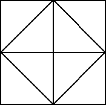
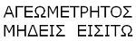
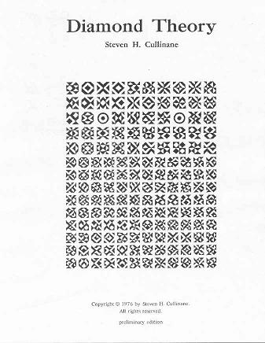
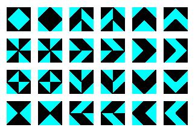
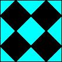
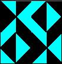

|
Finite Geometry Notes
|
| Related sites: The 16 Puzzle Bibliography On the author |
Diamond
|
 |

Motto of |
Symmetry is often described as invariance under a group of transformations. An unspoken assumption about symmetry in Euclidean 3-space is that the transformations involved are continuous.Diamond theory rejects this assumption, and in so doing reveals that Euclidean symmetry may itself be invariant under rather interesting groups of noncontinuous (and asymmetric) transformations. (These might be called noncontinuous groups, as opposed to so-called discontinuous (or discrete) symmetry groups. See Weyl's Symmetry.)
For example, the affine group A on the 4-space over the 2-element field has a natural noncontinuous and asymmetric but symmetry-preserving action on the elements of a 4x4 array. (Details)
By embedding the 4x4 array in a 4x6 array, then embedding A in a supergroup that acts in a natural way on the larger array, one can, as R. T. Curtis discovered, construct the Mathieu group M24 -- which is, according to J. H. Conway, the "most remarkable of all finite groups."
The proof that A preserves symmetry involves the following elementary, but useful and apparently new, result: Every 4-coloring (i.e., every map into a 4-set) can be expressed as a sum of three 2-colorings. It is conceivable that this result might have applications other than to diamond theory. (Details)
The proof that A preserves symmetry also yields some insight into orthogonality of Latin squares, at least in the 4x4 case. In this case, orthogonality turns out to be equivalent to skewness of lines in a finite projective 3-space. (Details)Diamond theory provides simple ways to visualize
- "the simplest non-trivial model for harmonic analysis,"1 the Walsh functions,
- "the smallest perfect universe,"2 the finite projective space PG(3,2),
- the "distinguished geometry," "remarkable geometric individual," and "gem,"3 the finite projective plane PG(2,4),
- the "remarkable"4 outer automorphisms of S6, and
- the structural equivalence of certain
- factorizations3 of graphs,
- parallelisms5 of partitions,
- spreads6 of lines, and
- sets of mutually orthogonal squares (i.e., n-orthogonal7 nxn matrices).
1. F. Schipp et al., Walsh Series, 1990
2. Burkard Polster, website
3. A. Beutelspacher in the American Mathematical Monthly, January 1986
4. P. J. Cameron and J. H. van Lint, Designs, Graphs, Codes, and their Links, 1991
5. P. J. Cameron, Parallelisms of Complete Designs, 1976
6. J. W. P. Hirschfeld, Finite Projective Spaces of Three Dimensions, 1985
7. J. Denes and A. D. Keedwell, Latin Squares and their Applications, 1974As a bonus, extending the action of A to a 4x4x4 array yields a simple way of generating the 1.3 trillion transformations natural to the 64 hexagrams of the I Ching. (Details)
On Euclid's
Elements:
"In view of... admiration the Elements has
consistently elicited over the years, and of the
prestigious role it concomitantly maintained until the
mid-19th century as scientific archetype, it is not
surprising that we find in the history of philosophy a
concept of truth sustained by the example of the
Elements, whose influence in philosophy runs
parallel to that of the Elements in science. This
concept I will call the 'Diamond Theory' of truth."
-- Richard J. Trudeau in The Non-Euclidean
Revolution, 1987
The image below shows the cover of a booklet I wrote in 1976. The booklet details the implications of what I call the "diamond theorem," after the diamond figure in Plato's Meno dialogue. This website, which updates the booklet, is written for mathematicians and college students of mathematics. For a less technical treatment of philosophical and literary matters related to the diamond theorem, see The Diamond Theory of Truth.

The
Non-Euclidean Revolution.
This 1987 book by Richard J. Trudeau, with a brief
introduction by H. S. M. Coxeter, traces in the recent
history of geometry the conflict between what Trudeau calls
the "Diamond Theory of truth" and the "Story
Theory of truth" -- known to more traditional
philosophers as "realism" and "nominalism."
For more on Trudeau's version of diamond theory, see this site's companion website, The Diamond Theory of Truth.
For more on the story theory, consider the following quotation:
"The moral of my story is: Read Euclid and ask questions. Then teach a course on Euclid and later developments arising out of these questions."
The quotation is from Robin Hartshorne, the author of Algebraic Geometry, in "Teaching Geometry According to Euclid," Notices of the American Mathematical Society, April 2000.
Plato tells how Socrates helped Meno's slave boy "remember" the geometry of a diamond. Twenty-four centuries later, this geometry has a new theorem.
|
|||||||||
|
The 2x2 case In the 2x2 case, D is a one-diamond figure (top left, below) and G is a group of 24 permutations generated by random permutations of the four 1x1 quadrants. Every G-image of D (as below) has some ordinary or color-interchange symmetry. |
|  |
|
Example of the 4x4
case In the 4x4 case, D is a four-diamond figure (left, below) and G is a group of 322,560 permutations generated by arbitrarily mixing random permutations of rows and of columns with random permutations of the four 2x2 quadrants. Every G-image of D (as at right, below) has some ordinary or color-interchange symmetry. |
||
|
 D |
Let e denote transposition of the first two rows, f denote transposition of the last two columns, g denote transposition of the top left and bottom right quadrants, and h denote transposition of the middle two columns. Then Defgh is as at right. Note that Defgh has rotational color-interchange symmetry like that of the famed yin-yang symbol. |
 Defgh |
|
Remarks on the 4x4
case: G is isomorphic to the affine group A on the linear 4-space over GF(2). The 35 structures of the 840 = 35 x 24 G-images of D are isomorphic to the 35 lines in the 3-dimensional projective space over GF(2). Orthogonality of structures corresponds to skewness of lines. We can define sums and products so that the G-images of D generate an ideal (1024 patterns characterized by all horizontal or vertical "cuts" being uninterrupted) of a ring of 4096 symmetric patterns. There is an infinite family of such "diamond" rings, isomorphic to rings of matrices over GF(4). For a movable JavaScript version of these 4x4 patterns, see The Diamond 16 Puzzle. |
||
The statement of the theorem may be clarified by a research announcement written in 1978 that illustrates the above 4x4 example in reverse... Research Announcement, 1978 (pdf).
For an artist's rendering of some patterns generated as described in the diamond theorem (and many not so generated), see the following new (September 11, 2000) website: Tiling, by Mike Lyon.
For more illustrations and a sketch of the proof, see the following
Hartshorne's principle: "Whenever one approaches a subject from two different directions, there is bound to be an interesting theorem expressing their relation." - Robin Hartshorne, AMS Notices, April 2000, p. 464.
Plato's Diamond in the Meno
Plato as a precursor of Gerard Manley Hopkins's "immortal
diamond." An illustration shows the prototype of the figure
D discussed above.
Plato's
Diamond Revisited
Ivars Peterson's Nov. 27, 2000 column "Square of the
Hypotenuse" which discusses the diamond figure as used by
Pythagoras (perhaps) and Plato. Other references to the use
of Plato's diamond in the proof of the Pythagorean
theorem:
"We may say, roughly, that a mathematical idea is
'significant' if it can be connected, in a natural and
illuminating way, with a large complex of other
mathematical ideas."
- G. H. Hardy, A Mathematician's Apology (1940),
Cambridge University Press, reprinted 1969, page
89
affine geometry, affine planes, affine spaces, automorphisms, binary codes, block designs, classical groups, codes, coding theory, collineations, combinatorial, combinatorics, conjugacy classes, the Conwell correspondence, correlations, Cullinane, R. T. Curtis, design theory, the diamond theorem, diamond theory, duads, duality, error correcting codes, exceptional groups, finite fields, finite geometry, finite groups, finite rings, Galois fields, generalized quadrangles, generators, geometry, GF(2), GF(4), the (24,12) Golay code, group actions, group theory, Hadamard matrices, hypercube, hyperplanes, hyperspace, incidence structures, invariance, Karnaugh maps, Kirkman's schoolgirls problem, Latin squares, Leech lattice, linear groups, linear spaces, linear transformations, Mathieu groups, matrix theory, Meno, Miracle Octad Generator, MOG, multiply transitive groups, octads, the octahedral group, orthogonal arrays, outer automorphisms, parallelisms, partial geometries, permutation groups, PG(3,2), Plato, Platonic, polarities, Polya-Burnside theorem, projective geometry, projective planes, projective spaces, projectivities, Reed-Muller codes, the relativity problem, Singer cycle, skew lines, Socrates, sporadic simple groups, Steiner systems, Sylvester, symmetric, symmetry, symplectic, synthemes, synthematic, tesseract, transvections, Walsh functions, Witt designs
The
Combinatorics Net
The
Open Directory list of combinatorics sites
U. of
London Permutation Groups Resources
U.
of London Design Resources on the Web
Diamond Theory Bibliography |
"It is a good light, then, for those
That know the ultimate Plato,
Tranquillizing with this jewel
The torments of confusion."
- Wallace Stevens,
Collected Poetry and Prose, page 21,
The Library of America, 1997
Page updated July 17, 2004, and again on May 25, 2006. Created June 21, 2000.